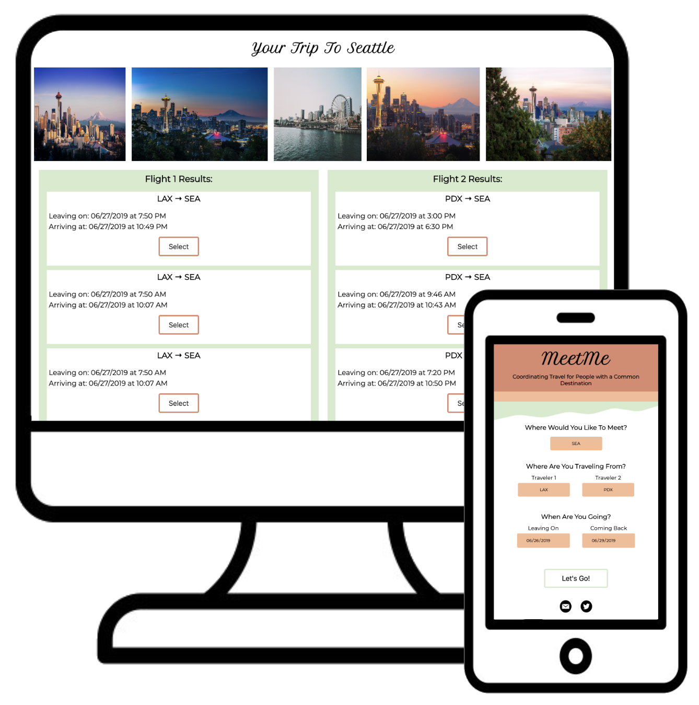
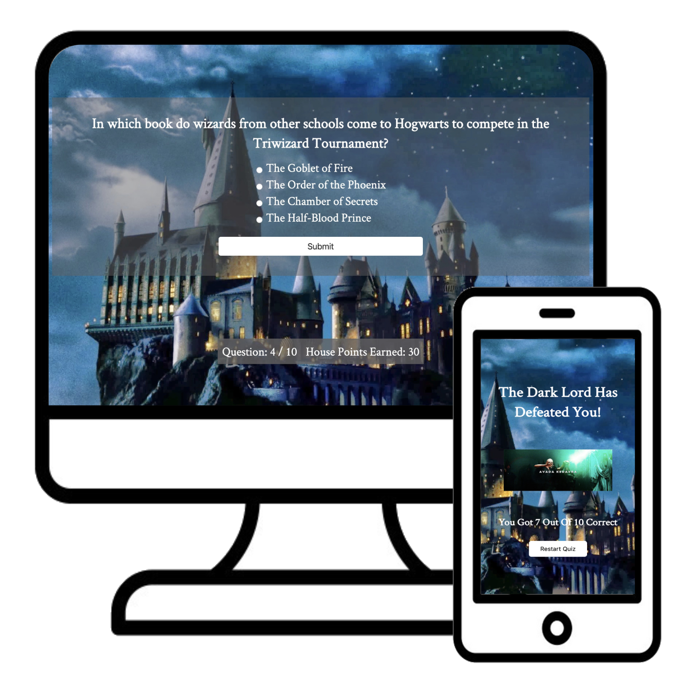

A Junior Full Stack Developer living in Portland, Oregon.
I am a current student in Thinkful’s Full Stack program where I am
learning the idiosyncrasies of web development. I have always been drawn
to logic and problem solving, and find the concept of spending 5 hours
debugging one piece of code oddly satisfying. I am a nut for creating
beautiful, approachable design, while tapping into my sales background
to be a business consultant to clients.
When I’m not sitting in front of my code, I am a beer enthusiast
(sometimes enjoyed whilst programming), a travel addict (ask me about
bathing in a mud volcano in Colombia), and a lover of board games
(reigning Catan champion).
Stack
Projects

MeetMe API Hack
A travel solutions app for bringing people together in a common
destination, inspired by my own personal struggle to plan trips with
long distance friends and family. MeetMe allows you to find flight
information for two different departure cities to a common destination
city, while also displaying photos of where you are headed.
Created with HTML, CSS, JavaScript and REST APIs.

Harry Potter Quiz App
This project was inspired by my embarassing knowledge of the Harry
Potter franchise. I created an interactive quiz for fellow enthusiasts
that allows the user to easily iterate through each question,
ultimately getting their final score of correctly answered questions.